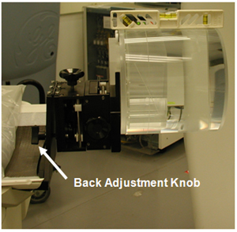

Operating Documentation
Direction 5193755-800, Rev# 8
BrightSpeed (Ltd. Access) Service Methods - Adv
Operating Documentation |
| Required Persons | Preliminary Reqs | Procedure | Finalization |
|---|---|---|---|
| 1 | 15 mins |
This document provides the necessary steps to center the Quality Assurance Phantom in the scan plane.
| Last Revised: | 29 July 2008 |
| Item | Qty | Effectivity | Part# | Manufacturer | |
|---|---|---|---|---|---|
| Phantom Holder | 1 | - | 2331933 | - | |
| Quality Assurance Phantom | 1 | - | 5128754 | - | |
| Bubble Level | 1 | - | - | - | |
| Condition | Reference | Eff |
|---|---|---|
Recommend procedure completion by trained personnel. | - | - |
Install all gantry covers and scan window.
Move the table to its home longitudinal position.
Attach phantom holder to gantry end of cradle.
Mount and center phantom onto the phantom holder.
Place bubble level on top of the phantom, positioned along the Z-axis. Adjust phantom holder back knob until the phantom is level front to back.
Illustration 1: Phantom Back Adjustment Knob

Turn on laser alignment lights.
Move table into gantry until axial internal alignment lights are lined up with phantom's axial reference mark.
Adjust phantom holder side knob until the sagittal internal alignment lights are lined up with phantom’s sagittal reference mark.
Elevate table until the coronal internal alignment lights are lined up with the phantom’s coronal reference mark.
On the console, select [SCANNER UTILITIES] from the bottom of the Scan Monitor.
Select [CENTER PHANTOM] from the Scanner Utilities window.
Press [CONFIRM] in the Phantom Centering window.
Press [START] on the SCIM when it flashes. Phantom Centering scan is performed.
Adjust phantom position if results are out of specification range.
| NOTE: | The phantom center specification is ± 0.5mm. |
Repeat steps 12 – 14 until the phantom is centered.
Once the phantom is centered, press [DONE] in the Phantom Centering window.
Press [QUIT] in the Scanner Utilities window.
No finalization required.